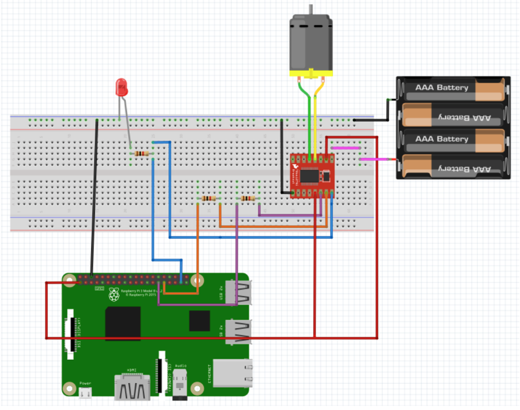
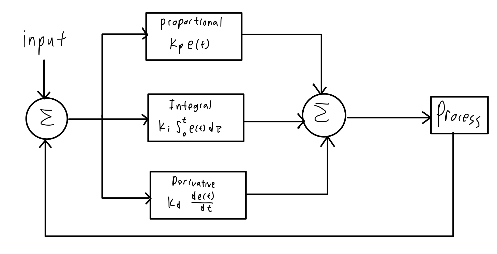
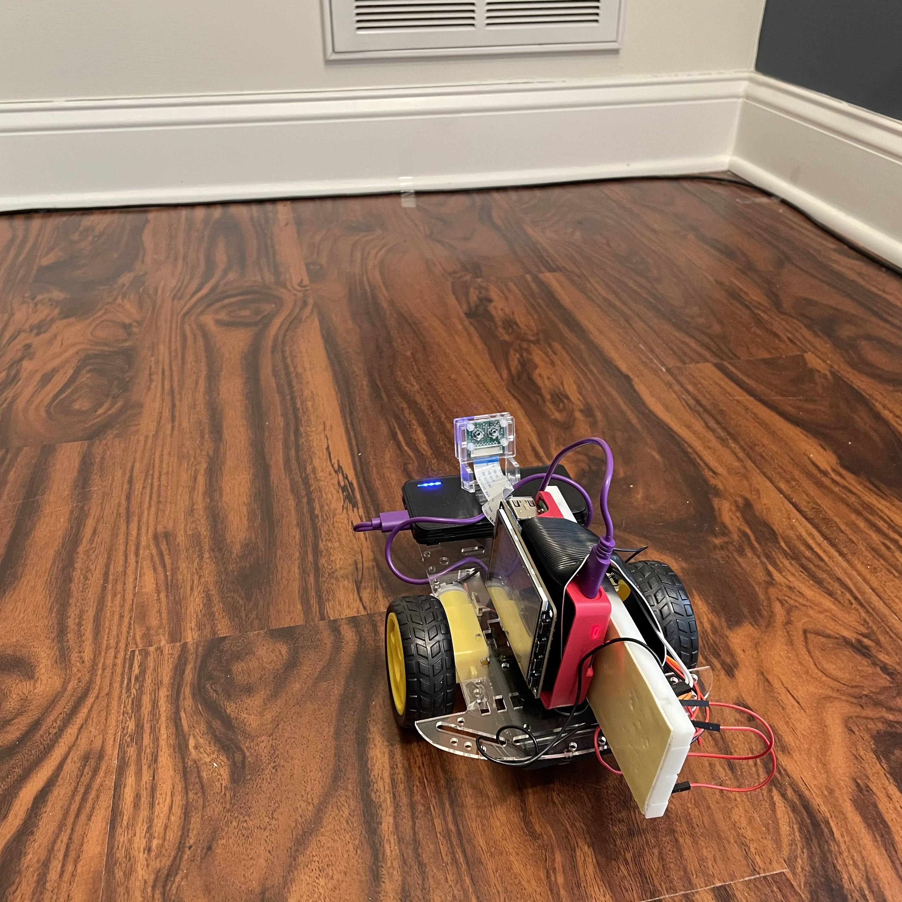
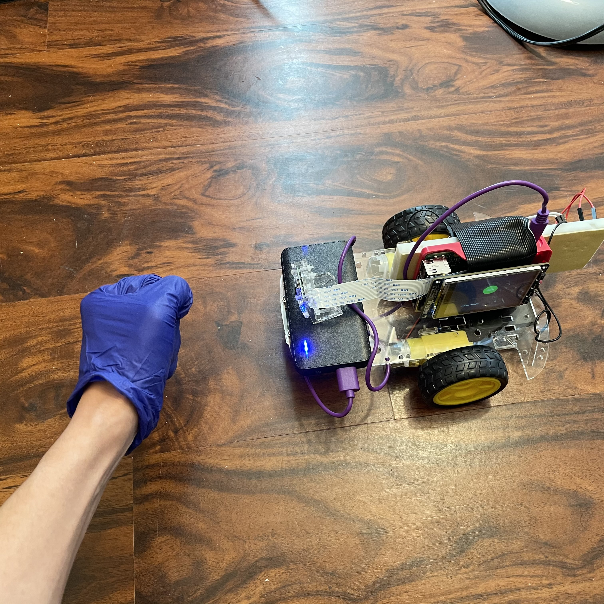
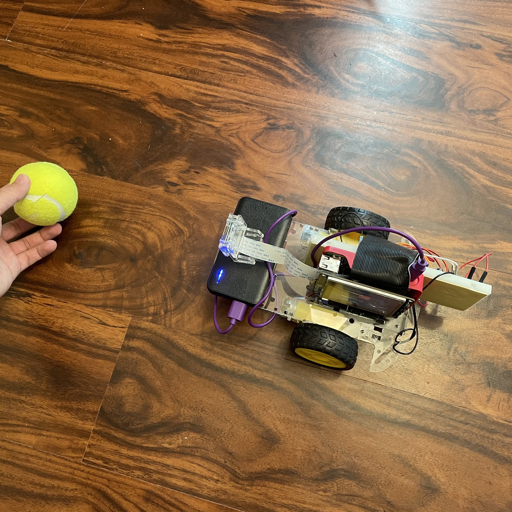

ECE 5725 Project
Jonathan Nusantara (jan265) and Jiaxuan Su (js3596)
12/15/2020
The goal is to create a robot with the ability to autonomously track and follow a tennis ball. The user may choose several robot modes through hand gestures showing digit 0 to 3 to the camera or by pressing the buttons on the touchscreen display. The modes includes autonomous ball-tracking, as well as manually moving the robot forward and backward. Information such as ball distance or robot modes are displayed on the main display.
We are first inspired on how drones are able to track the user as they record a video, providing a convenient experience for the user. We then thought about having a ground robot that has a similar tracking capability, where it will be able to carry things around and also operate indoors. The user will be able to seamlessly interact with the robot using finger gestures. This robot can be installed on shopping carts in grocery stores or luggage carts in the airport. Having this robot will allow the user to conserve their energy (from carrying items or pushing carts) and also focus their attention on other things, such as looking for the things they wanted to get from the grocery racks.
A robot is designed to be able to track and follow a ball (representing a human), as well as to read hand-gesture inputs from the user. Computer Vision is utilized to process the video input the camera to detect for the ball and hand gestures. PID controller mechanism is used for the robot motor for smooth tracking.
In order to achieve our goal that is addressed above, we knew that the robot would have to be made up of several components. The main components would be the Raspberry Pi as the main controller, a camera for the Computer Vision input, and robot base with motors for movements. These components would be used for the several subsystems that we needed, which would work together to achieve our goal. The four subsystems are the ball-tracking system, hand gesture detection system, motor control system, and the UI display system. These subsystems will be controlled by the Raspberry Pi. The breakdown of how they will simultaneously work together is broken down in the flowchart below.
The robot is designed to have a total of four modes:
Stop mode (Finger 0): At this mode, the robot will not be moving. It will also be waiting for user input from the button press or hand gesture.
Ball-tracking mode (Finger 1): At this mode, the robot will be detecting for the tennis ball and compute the necessary information for motor control. The motor control algorithm will then steer the robot to follow the ball closely. At the same time, the robot will be detecting for button presses or hand gesture from the user to switch to a different mode. At this mode, the robot is only able to switch to the "Stop" mode.
Forward mode (Finger 2): At this mode, the robot will be moving forward at a pre-determined speed. At the same time, the robot will be detecting for button presses or hand gesture from the user to switch to a different mode. At this mode, the robot is able to switch to the "Stop" or "Backward" mode.
Backward mode (Finger 3): At this mode, the robot will be moving backward at a pre-determined speed. At the same time, the robot will be detecting for button presses or hand gesture from the user to switch to a different mode. At this mode, the robot is able to switch to the "Stop" or "Forward" mode.
In the section below, we will have a more in-depth discussion on how each subsystem is designed.
For the ball tracking system, we will mainly be using the OpenCV library, which is an open source Computer Vision library. We are using the OpenCV 4.4.0 version and this library will first need to be installed to the system by command:
$ pip3 install opencv-contrib-python. Our main idea is to only focus the light green color of the tennis ball and to circular object using Hough Transform. This color thresholding method is inspired by the ECE 5725 Tracking Robotic Car project. We will then calculate the distance and radius of the ball and pass those information for the motor control algorithm.
These are the steps that will be performed to detect the ball:
1. We would first take input from the camera by calling the function cv2.VideoCapture(-1). The video frame dimension is reduced to 320x240 pixels to have a faster performance by using cap.set() function.
2. During every loop, the function cap.read() will be called to get a frame from the video feed.
3. For each frame, we would first perform noise filtering using a low-pass filter by using the cv2.GaussianBlur function.
4. The image will then be converted from RGB to HSV color-space using the cv2.cvtColor(frame, cv2.COLOR_BGR2HSV) function. We will then be able to threshold for specific light green tennis ball color in the HSV colorspace using the cv2.inRange() function.
5. Once we have detected the specific light green color, we will perform erosion and dilation to remove the noise around the detected ball using the function cv2.erode() and cv2.dilate().
6. We will perform another noise filtering once again to remove any noise that may have been introduced by the dilation.
7. Next, the Circle Hough Transform cv2.HoughCircles()is performed to detect circular objects in the frame. Parameters are passed to have a range of circle sizes to detect. The output will be an array of the detected circles in the frame.
8. If the array is not empty (in which a circle is detected), for each circle we will be extracting the x-coordinate and radius information of the circle. These values will be appended to a prepared list variable.
9. We would then perform an averaging of every 4 entries. If our list has a length of 4, we would be averaging the x-coordinates and radius values to filter out noise. This list would be cleared everytime it reaches length of 4.
10. For our motor control program, we will be passing the pixel distance of the edge of the ball from the right and left of the frame, which can be calculated from the ball x coordinate, the ball's pixel radius, and the frame width.
11. For our User Interface display, we will be passing the current ball distance. We will be calculating it based on the formula: "actual distance = actual ball radius * focal length / pixel radius". However, the focal length of the camera would first need to be initialized. It can be calculated using the formula: "focal length = (measured ball pixel radius * actual ball distance from camera / actual ball width".
12. If a ball has been detected, a ball_detected variable will be set to True, which would trigger the motor to track the ball. If the ball was gone for some time (i.e 2 seconds), then the ball should be declared missing.
With the steps above, the tennis ball will be detected and the acquired data may be passed to other subsystems.
Similar to the ball tracking system, this subsystem will also utilize the OpenCV library. Our goal will be to detect for the hand and to detect on the number of lifted fingers, which would represent the intended digits. We will be calculating the contour and Convex Hull of the hand, and then to calculate the number of defects. The defects would show the gaps between the fingers, which would tell us on how many fingers are lifted.
This method is inspired by the ECE 5725 Air Painter project and this hand gesture project.
These are the steps that will be performed to detect the hand gesture:
1. The first step is to extract a similar frame as described in step 1 and 2 of the ball detection function.
2. Then, similar to the ball detection function, we would be converting to HSV colorspace, performing HSV threshold, perform a low-pass filter, as well as erosion and dilation.
3. Once most of the noise has been cleared up, we will be extracting all of the contours in the image frame using cv2.findContours(). The contour of the hand will be extracted, as well as possibly other objects with similar colors, and output into a list.
4. Next, we would want to extract just the hand's contour on the list. We assumed that it would be one with the biggest area, as other contours would just be noise. The area will be calculated using the function cv2.contourArea() and index with the largest area must have been the hand.
5. Since the contour of the hand may not be smooth, it will first be smoothed using the cv2.approxPolyDP() function. This method was suggested by the hand-gesture project blog as it helps to get a cleaner hand contour.
6. Aside from the contour, we also created the Convex Hull around the hand using cv2.convexHull() function.
7. The areas of the contour and Convex Hull are then calculated, as it would be used to separate when 0 or 1 finger is lifted.
8. Then, the number of defects are calculated using the function cv2.convexityDefects() by passing the contour and Convex Hull values.
9. Now that we have a list of defects, we would then verify if these defects are actually gaps between the fingers. We are inspired by the ECE 5725 Air Painter project where they calculated the defects angle using the Cosine Rule. If the defects is less than 90 degrees, then it must have been the gaps between the fingers.
10. The calculated defects are then averaged out over 10 entries to filter out false detection.
11. Based on the number of defects, we can then find out the number of lifted fingers. When there 2 defects, there would be 3 fingers lifted. When there are 1 defect, there would be 2 fingers lifted. When there are no defects, then it would be 0 or 1 finger lifted. In order to separate the two, we would compare the contour and Convex Hull area. When there are no fingers lifted, the two areas will be almost identical. The Convex Hull area will be larger than the contour area when a finger is lifted.
With the steps above, the number of fingers shown will be stored in a variable which would then be used to change the robot mode.
The robot system was based on the robot base platform used in ECE 5725 labs. The robot base is driven by two DC motors, which are connected to a motor controller. Using the motor controller, we are able to control the speed of the motor using the duty cycle of the PWM signal and to control the motor direction using the direction pin signals. The connection setup of a single motor is shown below.
During the manual forward and backward movement, the robot will have a constant duty cycle and direction throughout the process. On the other hand, during the ball tracking mode, we are setting the individual motor speed depending of the position of the tracked ball. We decided to use a PID control algorithm to calculate the duty cycle of the PWM signal for the each motor. This would allow a smooth steering of the robot in tracking the ball.
We have decided to only use PD control considering that our robot was a relatively simple system. The integral control would add complexity to our program and could possibly cause problems more than improve the performance of our robot. In the ball detection program, the distance from the edge of the ball to the edge of the screen was calculated for both sides of the ball. The PD control used these two values as the inputs. Two separate functions were used to calculate the speed of two motors. The proportional term of the motor speed was calculated by the distance times the proportional coefficient (kp), where the motor will be faster if the ball is further, and vice versa. The derivative term was calculated by the current distance minus the distance in the previous frame then times the derivative coefficient (kd), which allows some level of smoothing for velocity changes.
speed = kp * distance + kd * (distance - previous_distance)
The User Interface will be displayed on the touchscreen PiTFT display attached to the Raspberry Pi. This will be done using the PyGame library, which allows us to display text or buttons on the display. The display will be rather simple with a goal of an "easy-to-use" robot. During the "Stop" mode, the screen will display a green button to go to the "Ball-Tracking" mode. It will also display the current robot mode mode. During any other mode where the robot will be moving, the screen will display the red button to go to "Stop" mode. During the "Ball-Tracking" mode, aside from displaying the red button, it will also display how far the detected ball is from the robot in centimeters.
The ball tracking function involves several image processing functions that requires parameter tweaking.
First of all, we would need to tweak the HSV threshold values to detect the light green color of the tennis ball.
The HSV value are tweaked through trials and errors to get the best values that would detect the light green color without too much noise.
Next, this program utilizes several image processing functions from OpenCV such as low-pass filter, erosion, dilation and Hough Transform.
Each of these functions has parameters that need to be tweaked.
The low pass filter has a kernel size that needs to be adjusted. When the size is too small, the noise around the ball will not be removed. However when the kernel is too big, we will lose too much information of the ball shape.
The erosion and dilation also have kernel sizes to be adjusted. A useful amount of erosion needs to happen to remove the noise around the ball, while the dilation is needed to patch up the eroded areas to make the ball round. If there kernel size is not great, the ball will not have a circular shape and thus will not be detected by the Hough Transform.
Finally, we needed to adjust the Hough Transform that has several parameters to be adjusted, which are the min and max circle radius, as well as the param1 and param2. We have learned that lowering param1 would adjust the edge detector, which causes it to be more sensitive to smaller circles. If it is too small, we would detect a bunch of noises, which would be bad.
In the end, we are able to have a program that will detect the contour of the ball. Based on the contour, we are able to get useful information such as ball radius and ball distance, which are essential information for the motor control program to track the ball. The images below shows the working ball detection program.
During the testing, the first thing that we have realized early was that our hand color is often similar to the background, which would be a plain white wall.
As a result, it would be difficult for the program to detect the user's hand, as it will be detecting for the biggest object of a certain color.
We have decided to wear a blue glove, which would be a unique color in our testing environment.
This has greatly improved our hand detection performance.
Unfortunately, before every experiment session, we would need to adjust the HSV threshold value to detect the blue-colored glove.
During our testings, we have also performed a lot of trials and errors in increasing the hand gesture detection performance.
In our program, there are plenty of image processing functions like low-pass filter to reduce noise, erosion, and dilation.
Similar to the process that was done for the ball detection program, we are tweaking the values of the kernel size of the mean filter, erosion kernel, and dilation kernel.
The tweaked values are based on the detected hand region during our testing process, to make it look as similar to the original hand.
For example, a mean filter a kernel size that is too big will cause the image to be "pixelated" and lose information, but having it too small means that there will be too much noise around the hand.
When erosion kernel is too big or if the dilation kernel is too small, the finger will be too thin to be properly detected.
We also realized about the minor things that we could improve for a more consistent performance.
For example, we realized that there are cases where the finger "0" and "1" were often misinterpreted as each other.
The portion of the code that decides this is as below:
if defects_most == 0:
# If hull is 10% bigger than contour => finger 1
if (area_hull-area_cnt)/(area_cnt) > .15:
finger = 1
else:
finger = 0
As we can see above, if the hull area is 15% bigger than the contour area, then the finger "1" is detected.
This value is something that we tweaked to have the best performance.
The hull and contour area ratio is heavily impacted by the angle of how the user showed the hand to the camera, and we would need to adjust this value to have the best performance.
Lastly, we have also realized on how we would be able display several versions of finger "3", but have found the best performing version.
Rather than showing the conventional "3" sign with index, middle, and ring finger, we should show our thumb, index, and middle finger.
This allows an easier detection of the finger gaps and thus a better detection performance.
In the end, we are able to have a great performance of the hand gesture detection program. Given the adjusted threshold of the HSV value, we are able to consistently detect the digit shown on the user's finger. This value will be stored on a variable to be used to change the robot mode. Below, we will show several images of how the fingers are detected by the robot. The black and white image on the left shows the HSV-converted image frame, which only detects for the thresholded HSV value for the blue color of the glove. All blue colored objects will be shown as white in this image frame. The image on the right shows the image frame along with the convex hull lines and recognized digit.
As a final step for the Computer Vision program, we integrated the ball detection and hand gesture detection program together.
We tested its performance to see if the program is able to perform these two tasks one after another for each frame.
Based on our measurement, we found that it took around 0.035s for each frame, which is a suitable performance for our needs.
The images below shows the video feed with the detected ball and hand gesture.
After verifying the performance of the ball detection function and the hand detection function. The detection program was integrated and tested with the motor control. Tests showed that the performance of the robot was largely affected by the exposure. The camera will automatically adjust its video feed brightness based on the current exposure, which affects the color detection of the robot and hand. Additionally, we found that the ball and hand gesture detection did not perform well if the robot is facing a crowded background.
When the robot was moving, it was hard to keep a constant background and light exposure as the robot is moving around a room. As a result, the robot would not be able to detect the ball or hand gesture well. With all these constrains, we have decided to test the robot in a closed space. The robot will always be facing a single direction towards a plain white wall. Additionally, testing in this closed space helps keep a constant light exposure.
  During the ball tracking mode test, the robot initial position is to face the plain wall. Hand gestures were then presented to control the robot moving forward, backward and stop. Then, hand gesture of showing “1” would be presented to the robot to ball tracking mode. To test the ball tracking function, a tennis ball was placed in front of the robot and moved in a zigzag pattern. In this way, the ball tracking function could be tested while maintaining a consistent background for the camera.
During the initial testings, the tracking movement is not smooth and the ball is not tracked well. As a result, we needed to tweak the kp and kd values in order to make the tracking smoother. This involves a lot of trials and errors, but in the end we are able to find the right values that would track the ball well. We have also added a constant duty cycle value into the equation, which allows us to set the minimum duty cycle of the motor. This is because we have learned that the motor will only move above the duty cycle of 40 in order for the motor to overcome the wheel's friction to the ground. Additionally, we have also tested on how well the robot is finding a new ball after it has lost it. We have noticed that there are cases where we would receive false positives of detected ball from a crowded background. As a result, we determined that the detected object is a ball only if it is still there after some time (or some captured frames). A code snippet from the main loop is included below to describe the process:
# If ball was previously not detected
if ball_detected == 0 and ball_verify == 0:
ball_first_detected = time.time()
ball_verify = 1
if ball_verify == 1 and (time.time() - ball_first_detected) > 0.1: # Verification after .1 second passes, ball still detected
ball_detected = 1
ball_verify = 0This is the subsystem with the most straightforward testing. We tested on how the buttons will correctly transition between modes. Additionally, during the "Ball-Tracking" mode, we made sure that the ball distance will be displayed correctly. Below are the images showing the PiTFT display during "Stop" and "Ball-Tracking" mode. Notice how the display on the "Ball-Tracking" mode will display the current ball distance.
Overall, we are able to achieve all of the main goals of this robot project.
The robot is able to track the tennis ball well and to follow it smoothly with the PID-controlled motor that was set up.
It will also read hand gestures that are provided by the user to change robot modes.
There are also information such as ball distance or robot modes displayed in the touchscreen display.
Thus, we can say that our robot have met all of our initial goals.
However, we have also discovered some areas where the robot may be improved.
One of the weaknesses of the robot is on how sensitive our Computer Vision system is to changes in exposure.
Our ball and hand detection system is based on color thresholding through HSV value.
When the exposure changes, the camera would automatically change its brightness level and so we would need to readjust the threshold HSV range to detect the ball and hand color.
This put a constraint on the robot to only work well in a small space of the room, as moving to other parts of the room meant a different exposure level.
It would be great if the threshold may also be automatically adjusted based on the current brightness level of the camera.
Another weakness of the robot is the poor performance with a crowded background.
Our robot performs well when it is facing towards a constant background, such as a plain wall, as it is able to separate the ball or hand from the background easily.
However, if the background is crowded, for example with blue-colored objects similar to the color of the gloves worn on the hand, it would severely impact the hand gesture reading.
This proofs as a limitation for the robot.
Lastly, from the video we can see that the speed of the robot when tracking the ball could have been faster.
During the testing, we realized that program would run slower when Raspberry Pi is running on battery pack rather than a power supply.
This may be because the Raspberry Pi tends to show an "under-voltage" warning when running on the battery pack.
This led to a lower frames per second of the robot, which forces us to lower the robot speed when it is running on battery pack to track the ball better.
As a result, we may have to explore a battery pack that may supply comparable power to the power supply or to explore multi-processing to speed up the program.
There are a few things that we can do to further improve the robot, which will be discussed in the next section below.
Based on the discussion in the Results section, there are some improvements that may be done. In the current design, the functions are achieved within a single program. Because the computer vision requires a relatively large amount of processing power, the speed of the program is limited by the performance of a single core on Raspberry Pi. This resulted a noticeable latency when detecting the ball. The latency significantly affected the performance of the robot and can cause the robot losing the ball or hitting into the ball when the robot is moving relatively fast. Our future work will include using multiprocessing to separate the camera functions and the control programs to process in different threads. This will help us utilize the multicore processing power of Pi to increase the speed of the program thus improve the performance of our robot.
Another future improvement could be using better motors. In the current design, the performance of the motor is not very consistent. The left and right motor tend to have different speed under the same duty cycle and stall at different duty cycle. This caused a problem when implementing the motor control. A more precise motor will improve the performance significantly. The power supply can also be improved in the future design. The power bank used in current design cannot provide enough power for the Raspberry Pi. This lowers the clock frequency of the Pi and slows down the program. Our future work will be looking for a mobile power supply which could provide a stable 5V3A output to power the Pi.
Finally, we mentioned in the Results section that our detection algorithm are having trouble when facing a crowded background. There may some improvements that can be done here, perhaps on performing a continuous background subtraction on every several frames. This would allow the robot to be more robust and to work without needing a constantly plain background.
The main goal of the robot is to be able to track and follow a tennis ball, where in the scope of this prototype the ball represents a human. We also wanted to allow the user to control the robot using their hand gestures. Additionally, the robot should provide a user interaction by displaying information or buttons through the touchscreen display. The robot is able to perform the above goals well, as shown in the demo video. However, we have discovered several limitations of the robot, such as its sensitivity to exposure changes and crowded backgrounds. These are issues that may be fixed through future works. With the success that was achieved in this first prototype, we are one step closer to making a human-tracking ground robot.
- Raspberry Pi 4 $35.00
- Adafruit PiTFT $35.00
- Raspberry Pi Camera Module V2 $25.00
- Robot base with DC motors $25.00
- LEDs, Resistors and Wires - Provided during the course
jan265@cornell.edu
ECE MEng '20
js3596@cornell.edu
ECE MEng '20
#
#Jiaxuan Su (js3596), Jonathan Nusantara (jan265)
#
Ball tracking program
#
import pygame
from pygame.locals import *
import os
import RPi.GPIO as GPIO
import time
import subprocess
import cv2
import numpy as np
import math
#Run fix touchscreen script
subprocess.check_output("./fix_touchscreen", shell = True)
# Environment setup for PiTFT
os.putenv('SDL_VIDEODRIVER', 'fbcon')
os.putenv('SDL_FBDEV', '/dev/fb0')
os.putenv('SDL_MOUSEDRV', 'TSLIB')
os.putenv('SDL_MOUSEDEV', '/dev/input/touchscreen')
# Pygame initialization
pygame.init()
pygame.mouse.set_visible(True)
size = width, height = 320, 240
white = 255, 255, 255
black = 0, 0, 0
red = 255, 0, 0
green = 0, 255, 0
screen = pygame.display.set_mode(size)
my_font = pygame.font.Font(None, 20)
start_button = {'Start': (160, 90)}
stop_button = {'Stop': (160, 90), 'Distance from ball': (110, 150)}
start_time_prog = time.time()
# Set GPIO channels
GPIO.setmode(GPIO.BCM)
# Motor A
GPIO.setup(26, GPIO.OUT) #PWMA
GPIO.setup(5, GPIO.OUT) #AI1
GPIO.setup(6, GPIO.OUT) #AI2
# Motor B
GPIO.setup(20, GPIO.OUT) #PWMB
GPIO.setup(12, GPIO.OUT) #BI1
GPIO.setup(16, GPIO.OUT) #BI2
# Motor initialization
left = GPIO.PWM(26, 50)
left.start(50)
right = GPIO.PWM(20, 50)
right.start(50)
GPIO.output(5, 0) # Set AI1 to low
GPIO.output(6, 0) # Set AI2 to low
GPIO.output(12, 0) # Set BI1 to low
GPIO.output(16, 0) # Set BI2 to low
# Robot mode variables
# 0 = stop, 1 = ball tracking, 2 = manual forward, 3 = manual backward
# 0 can be called anytime. 1, 2, and 3 can only be called from 0
global robot_mode
robot_mode = 0
global prev_robot_mode
prev_robot_mode = 0
global run #Program run flag
run = 1
global start #If start program
start = 0
ball_detected = 0 #If track the ball
# Constants
KERNEL_MORPH_BALL = np.ones((3,3),np.uint8)
KERNEL_MORPH_HAND = np.ones((4,4),np.uint8)
FOCAL = 220 # camera focal length
WIDTH_BALL = 3.35 # width of tennis ball
# HSV threshold of ball and hand
# Need to be adjusted depending on camera exposure and environment
# Glove HSV range
lower_hand = (91,155,0)
upper_hand = (123,255,65)
# Detect based on tennis ball color
lower_ball = (22, 30, 0)
upper_ball = (40, 255, 113)
# variables and list for functionalities
ball_x = [] # x axis coordinate of ball center
ball_rad = [] # Radius of ball center
dist_x = 0 # Pixel coordinate of ball center
dist_rad = 0 # Pixel radius of circle
defects_list = []
ball_last_detected = time.time()
ball_first_detected = 0
ball_verify = 0
motor_time = 0
mask_ball = 0
# Variables for modes and motor control
finger = 0 # Number for stop state
dist_calc = 0 # Distance of ball from camera in cm
dist_l = 0 # Pixel distance of circle from left of camera view
dist_r = 0 # Pixel distance of circle from right of camera view
dist_l_pre = 0 # Previous pixel distance of circle from left of camera view
dist_r_pre = 0 # Previous pixel distance of circle from right of camera view
left_speed = 0
right_speed = 0
# Take input from webcam
cap = cv2.VideoCapture(-1) # 640x480
# Reduce the size of video to 320x240 so rpi can process faster
cap.set(3,320)
cap.set(4,240)
# Distance average function for ball tracking
def average_distance(distance_list, length):
total = 0
for i in distance_list:
total += i
return total / length
def average_defects(defects_list):
return
# Ball tracking function
def ball_track():
global mask_ball, ball_x, ball_rad, dist_x, dist_l, dist_r, dist_rad, dist_calc, ball_detected, ball_last_detected, ball_first_detected, ball_verify
blurred = cv2.GaussianBlur(frame, (7, 7), 0)
hsv = cv2.cvtColor(blurred, cv2.COLOR_BGR2HSV)
mask_ball = cv2.inRange(hsv, lower_ball, upper_ball)
mask_ball = cv2.erode(mask_ball, KERNEL_MORPH_BALL, iterations=2)
mask_ball = cv2.dilate(mask_ball, KERNEL_MORPH_BALL, iterations=5)
mask_ball = cv2.GaussianBlur(mask_ball,(11,11),0)
# Detect circles using HoughCircles
# param is threshold of size of circle
# If param2 is low, more sensitive to small circles and false positive
circles = cv2.HoughCircles(mask_ball,cv2.HOUGH_GRADIENT,2,120,param1=100,param2=45,minRadius=2,maxRadius=0)
#Draw Circles
if circles is not None:
# If ball was previously not detected
if ball_detected == 0 and ball_verify == 0:
ball_first_detected = time.time()
ball_verify = 1
if ball_verify == 1 and (time.time() - ball_first_detected) > 0.1: # Verification after .1 second passes, ball still detected
ball_detected = 1
ball_verify = 0
if ball_detected == 1:
ball_last_detected = time.time() # Update last detected time of the ball
for i in circles[0,:]:
cv2.circle(frame,(int(round(i[0])),int(round(i[1]))),int(round(i[2])),(0,255,0),5) # x is 320 y is 240, draw circle
ball_x.append(round(i[0])) # Append x center coordinate to list
ball_rad.append(round(i[2])) # Append radius to list
# Average every 4 entries
if len(ball_x) == 4:
dist_x = average_distance(ball_x, 4) # x coordinate of ball center
ball_x = []
# Calculated distance of ball from camera
dist_rad = average_distance(ball_rad, 4)
dist_calc = WIDTH_BALL * FOCAL / dist_rad
ball_rad = []
# For output to control algorithm
dist_r = round(320 - (dist_x + dist_rad), 2)
dist_l = round(dist_x - dist_rad, 2)
# Focal distance calculation
# focal = (dist_ave * 25.4 / 3.35) # in pixels and cm
else:
if ball_verify == 1: # During ball dection verification process, if ball is lost means false positive
ball_verify = 0
ball_lost_time = time.time() - ball_last_detected
dist_calc = 0 # Reset ball distance
# maybe use ball lost time for rotate, but immediately set ball_detected = 0
if ball_detected == 1 and ball_lost_time > 2: # If ball has been missing for > 2 seconds
ball_detected = 0 # Ball is not detected / not in frame -> need to find ball
# Finger detection function
def hand_gesture():
global mask_hand, finger, defects_list
try:
hsv = cv2.cvtColor(frame, cv2.COLOR_BGR2HSV)
# Get only glove color
mask_hand = cv2.inRange(hsv, lower_hand, upper_hand)
# Noise filtering
mask_hand = cv2.GaussianBlur(mask_hand,(5,5),0)
# Erosion and dilation (need to be adjusted)
mask_hand = cv2.erode(mask_hand,KERNEL_MORPH_HAND,iterations = 1)
mask_hand = cv2.dilate(mask_hand,KERNEL_MORPH_HAND,iterations = 2)
# Noise filtering
mask_hand = cv2.GaussianBlur(mask_hand,(5,5),0)
# Find contour
contours,hierarchy= cv2.findContours(mask_hand,cv2.RETR_TREE,cv2.CHAIN_APPROX_SIMPLE)
# Get max area in detected contour (which is the hand)
area_max = 0
contour_index = 0
for i in range(len(contours)):
cnt = contours[i]
area_temp = cv2.contourArea(cnt)
if area_temp > area_max:
area_max = area_temp
contour_index = i
cnt = contours[contour_index]
# Create convex hull of hand
hull = cv2.convexHull(cnt)
# Smooth and approximate the contour
cnt_ap= cv2.approxPolyDP(cnt,0.0005*cv2.arcLength(cnt,True),True)
# Calculate contour and hull area
# To compare finger digit 0 or 1
area_cnt = cv2.contourArea(cnt)
area_hull = cv2.contourArea(hull)
# Recalculate hull and calculate defects
# Need returnPoints to be False
hull = cv2.convexHull(cnt_ap, returnPoints=False)
defects = cv2.convexityDefects(cnt_ap, hull)
defects_count=0
# Loop to find number of defects
for i in range(defects.shape[0]):
s,e,f,d = defects[i,0]
start = tuple(cnt_ap[s][0])
end = tuple(cnt_ap[e][0])
far = tuple(cnt_ap[f][0])
# Triangle lengths
a = math.sqrt((far[0] - start[0])**2 + (far[1] - start[1])**2)
b = math.sqrt((far[0] - end[0])**2 + (far[1] - end[1])**2)
c = math.sqrt((start[0] - end[0])**2 + (start[1] - end[1])**2)
# Calculate angle using cosine rule
angle = math.acos((a**2 + b**2 - c**2) / (2 * a * b)) * 57.295
# If angle <90, it is a defect caused by finger raised
if angle < 90:
defects_count += 1
# Append defects count to list
defects_list.append(defects_count)
if len(defects_list) == 10:
defects_most = max(defects_list,key=defects_list.count)
defects_list = []
# Finger print
# 0 defect = finger 0 or 1
if area_cnt > 4000: # If there is hand
if defects_most == 0:
# If hull is 10% bigger than contour => finger 1
if (area_hull-area_cnt)/(area_cnt) > .15:
finger = 1
else:
finger = 0
# 1 defect => finger 2
elif defects_most == 1:
finger = 2
# 2 defects => finger 3
elif defects_most == 2 :
finger = 3
# Detect only 0 - 3 fingers
except Exception:
pass
# Motor movement function
def rotate():
left.ChangeDutyCycle(27)
right.ChangeDutyCycle(27)
GPIO.output(5, 1)
GPIO.output(6, 0)
GPIO.output(12, 0)
GPIO.output(16, 1)
def forward():
if robot_mode == 2:
left.ChangeDutyCycle(40)
right.ChangeDutyCycle(40)
GPIO.output(5, 1)
GPIO.output(6, 0)
GPIO.output(12, 1)
GPIO.output(16, 0)
def backward():
left.ChangeDutyCycle(40)
right.ChangeDutyCycle(40)
GPIO.output(5, 0)
GPIO.output(6, 1)
GPIO.output(12, 0)
GPIO.output(16, 1)
def stop():
GPIO.output(5, 0)
GPIO.output(6, 0)
GPIO.output(12, 0)
GPIO.output(16, 0)
# Set motor speed function
def set_speed():
global dist_l_pre, dist_r_pre, left_speed, right_speed, motor_time
k_p = 0.05
k_i = 0
k_d = 0
#d_time = time.time() - motor_time
if dist_calc > 15:
if dist_calc > 25:
k = 35
else:
k = 25
GPIO.output(5, 1)
GPIO.output(6, 0)
GPIO.output(12, 1)
GPIO.output(16, 0)
left_speed = k + k_p * dist_r #+ k_d * ((dist_r - dist_r_pre) / d_time)
right_speed = k + k_p * dist_l #+ k_d * ((dist_l - dist_l_pre) / d_time)
left.ChangeDutyCycle(left_speed)
right.ChangeDutyCycle(right_speed)
elif dist_calc > 8: # between 8 and 13, re-center only
left.ChangeDutyCycle(20)
right.ChangeDutyCycle(20)
if dist_l + 40 < dist_r: # If ball is a bit right, do clockwise
GPIO.output(5, 1)
GPIO.output(6, 0)
GPIO.output(12, 0)
GPIO.output(16, 1)
elif dist_r + 40 < dist_l: # If ball is a bit right, do counter-clockwise
GPIO.output(5, 0)
GPIO.output(6, 1)
GPIO.output(12, 1)
GPIO.output(16, 0)
else: # Stop moving
GPIO.output(5, 0)
GPIO.output(6, 0)
GPIO.output(12, 0)
GPIO.output(16, 0)
else: # When ball is close
left_speed = 0
right_speed = 0
left.ChangeDutyCycle(left_speed)
right.ChangeDutyCycle(right_speed)
#Display start button
screen.fill(black)
pygame.draw.circle(screen, green, (160, 90), 30)
for my_text, text_pos in start_button.items():
text_surface = my_font.render(my_text, True, white)
rect = text_surface.get_rect(center=text_pos)
screen.blit(text_surface, rect)
pygame.display.flip()
#Main loop
while run:
start_loop = time.time()
_, frame = cap.read() # Read image frames from live video feed
screen.fill(black)
for event in pygame.event.get():
if event.type == pygame.QUIT:
pygame.quit()
GPIO.cleanup()
sys.exit()
if (event.type is MOUSEBUTTONDOWN):
pos = pygame.mouse.get_pos()
elif (event.type is MOUSEBUTTONUP):
pos = pygame.mouse.get_pos()
x, y = pos
if 130 < x < 190 and 60 < y < 120:
if robot_mode == 0:
prev_robot_mode = robot_mode
finger = 1
robot_mode = 1
elif robot_mode != 0:
prev_robot_mode = robot_mode
finger = 0
robot_mode = 0
# Checking for different robot modes
if robot_mode == 0: # Stop
if prev_robot_mode != 0:
stop()
hand_gesture()
prev_robot_mode = robot_mode
robot_mode = finger
elif robot_mode == 1: # Ball tracking
ball_track()
if ball_detected:
#stop()
#forward()
set_speed()
dist_l_pre = dist_l
dist_r_pre = dist_r
else:
rotate()
hand_gesture()
if finger == 0: # Stop detected
# Reset variables
ball_detected = 0
ball_verify = 0
# Change mode
prev_robot_mode = robot_mode
robot_mode = finger
elif robot_mode == 2: # Forward
if prev_robot_mode != 2:
forward()
prev_robot_mode = robot_mode
hand_gesture()
if finger == 0 or finger == 3: # From forward, can only stop or backward
prev_robot_mode = robot_mode
robot_mode = finger
elif robot_mode == 3: # Backward
if prev_robot_mode != 3:
backward()
prev_robot_mode = robot_mode
hand_gesture()
if finger == 0 or finger == 2: # From backward, can only stop or forward
prev_robot_mode = robot_mode
robot_mode = finger
# Video display
# cv2.imshow('tracking',frame)
# cv2.imshow('Ball mask',mask_ball)
# cv2.imshow('hand mask',mask_hand)
# # Display PiTFT buttons
if robot_mode != 0:
pygame.draw.circle(screen, red, (160, 90), 30) # Draw stop button
for my_text, text_pos in stop_button.items():
text_surface = my_font.render(my_text, True, white)
rect = text_surface.get_rect(center=text_pos)
screen.blit(text_surface, rect)
my_text = str(round(dist_calc))
text_surface = my_font.render(my_text, True, white)
rect = text_surface.get_rect(center=(210,150))
screen.blit(text_surface, rect)
else:
pygame.draw.circle(screen, green, (160, 90), 30) # Draw start button
for my_text, text_pos in start_button.items():
text_surface = my_font.render(my_text, True, white)
rect = text_surface.get_rect(center=text_pos)
screen.blit(text_surface, rect)
# Display motor mode
my_text = "motor mode"
text_surface = my_font.render(my_text, True, white)
rect = text_surface.get_rect(center=(100,190))
screen.blit(text_surface, rect)
my_text = str(robot_mode)
text_surface = my_font.render(my_text, True, white)
rect = text_surface.get_rect(center=(210,190))
screen.blit(text_surface, rect)
pygame.display.flip()
# Program imeout
if (time.time() - start_time_prog) > 300:
run = False
k = cv2.waitKey(5) & 0xFF
if k == 27:
break
stop()
GPIO.cleanup()
cap.release()
cv2.destroyAllWindows()
}